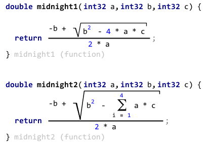
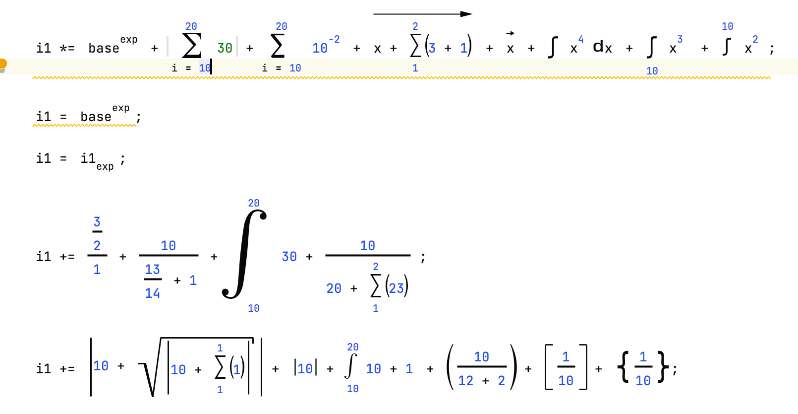

Math languages
Math
Language Namespace : de.itemis.mps.editor.math
This language provides a math cell that is used for all math based concepts. It can also be used for creating complex layout that can't be achieved with the normal Editor cells.

First you have to add some child cells. The need to have a name and a scale from 0 to 1. Next, some symbols can be added.
A symbol is a node that basically contains a paint method where you can draw anything within the bounds. The paint method
uses a swing Graphics object to draw on.
For more information about Swing,
visit The Oracle 2D Graphics page, especially the section
Drawing Geometric Primitives. The method update dimension
can be used to set the size of the symbol. The symbols can be painted by calling the paint method.
Example: ^
symbol ArrowLeft {
paint: (g, bounds)->void {
double triangleWidth = bounds.getHeight() * 2;
triangleWidth = Math.min(triangleWidth, bounds.getWidth() / 2);
g.draw(new Line2D.Double(bounds.getMinX(), bounds.getCenterY(), bounds.getMaxX() - triangleWidth, bounds.getCenterY()));
Path2D.Double triangle = new Path2D.Double();
triangle.moveTo(bounds.getMaxX(), bounds.getCenterY());
triangle.lineTo(bounds.getMaxX() - triangleWidth, bounds.getMinY());
triangle.lineTo(bounds.getMaxX() - triangleWidth, bounds.getMaxY());
g.fill(triangle);
}
update dimension: (dimension)->void {
dimension.height = Math.pow(dimension.width, 0.4);
dimension.height = Math.max(dimension.height, 5);
}
}
After settings some variables and initializing the cell in the init method, the cells have to be placed in the
layout method. The dimensions of the child cells should fit into the bounds of the math cells. The paintmethod
can be used. The getCenterY method should specify the vertical center of the math cell.
Example: generator for an editor of a fraction expression:
math {
child cells: upper $COPY_SRC$<constant> 1.0
lower $COPY_SRC$<constant> 1.0
symbols: << ... >>
variables: << ... >>
init: <no initFunction>
layout: (childCells, cell, symbols)->void {
cell.setWidth(Math.max(upper.getWidthInt(), lower.getWidthInt()));
upper.setX((cell.getWidthInt() - upper.getWidthInt()) / 2);
lower.setX((cell.getWidthInt() - lower.getWidthInt()) / 2);
upper.setY(0);
lower.setY(upper.getHeightInt() + 3);
}
paint: (g, childCells, cell, symbols)->void {
int x = Math.min(lower.getXInt(), upper.getXInt());
int x2 = Math.max(lower.getXInt() + lower.getWidthInt(), upper.getXInt() + upper.getWidthInt());
g.setStroke(new BasicStroke(2.0f));
g.drawLine(x, lower.getYInt() - 2, x2, lower.getYInt() - 2);
}
getCenterY: (childCells, cell)->int {
upper.getHeightInt();
}
}
The math cell supports two style attributes:
- math-symbol-color: the color of the math symbol
- side-tranformation-helper-cells: cells are added to the left and right side of the math cell so that side transformations work. The default value is true.
Math Notations
Language Namespace : de.itemis.mps.editor.math.notations

This language implements standard math cells that can be used in any editor:
- math.above: cell with a symbol above another cell (e.g. the vector symbol)
- math.abs: vertical lines to the left and right of the cell (e.g. absolute value: |x|)
- math.abstract-loop: base cell for loop cells such as product and sum signs
- math.loop: base cell for loop cells such as sum signs
- math.overreachingLoop: overreaching loop cell
- math.brackets: cell that can draw brackets. The left and right bracket has to be provided as symbols.
- math.curly-brackets: curly brackets: { x }
- math.parentheses: parentheses: ( x )
- math.square-brackets: square brackets: [ x ]
- math.overreachingBrackets: overreaching brackets cell
- math.integral-custom: custom integral symbol with optional upper/lower limit and variable and a custom symbol
- math.integral an integral symbol with optional parentheses
- math.division: an upper and lower cell separated by a line
- math.nroot: cell for nth root expressions
- math.sqrt: cell for root expressions
- math.superscript: cell for superscript text, also known as exponential expression in math: 2^3
- math.subscript: cell for subscript text
- math.product: cell for the math sigma notation
- math.subscripted-function: cell for functions that have a subscripted text (e.g. logN)
- math.sum: cell for the math pi notation
Java Math
Language Namespace : de.itemis.mps.editor.math.java
This language implements some common math symbols as Base language expressions
- abs: absolute value expression
- cosine: cosine expression
- {: an expression surrounded by curly brackets
- frac: fractional expression
- integral: definite integral expression
- nroot: nth root expression
- pi: pi constant
- pow: exponential expression
- product: pi notation expression
- sin: sine expression
- sqrt: square root expression
- [: an expression surrounded by square brackets
- sum sigma notation expression